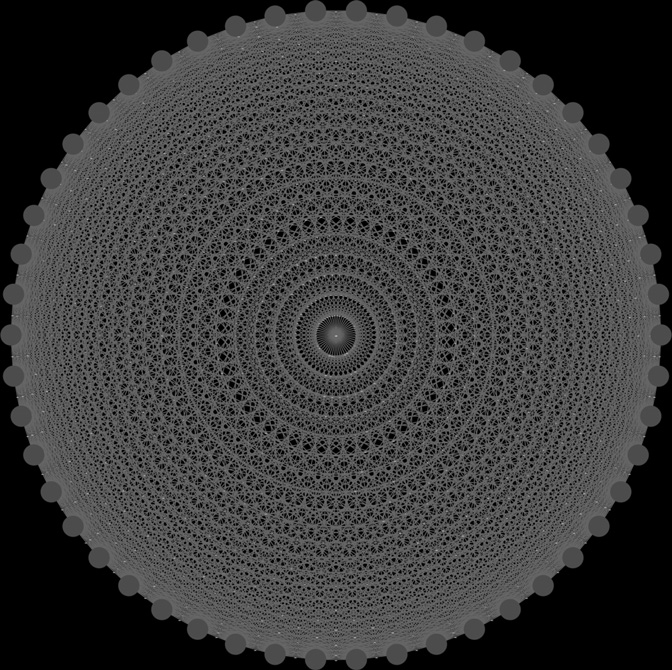

第三部分：回测
机器学习资产配置
16.1 研究动机
本章介绍层次风险平价（HRP）方法。1 HRP 组合解决了二次规划优化器的三大核心问题，尤其是 Markowitz 临界线算法（CLA）所存在的不稳定性、集中性和样本外表现不佳问题。HRP 运用现代数学方法（图论与机器学习技术），基于协方差矩阵所含信息构建分散化投资组合。然而，与二次规划优化器不同，HRP 不要求协方差矩阵可逆。事实上，HRP 可在病态退化甚至奇异协方差矩阵上计算组合权重，而这对二次规划优化器而言是无法实现的。蒙特卡洛实验表明，HRP 的样本外方差低于 CLA，尽管最小方差正是 CLA 的优化目标。与传统风险平价方法相比，HRP 在样本外所构建的组合风险更低。历史分析同样表明，HRP 的表现优于标准方法（Kolanovic et al. [2017]，Raffinot [2017]）。HRP 的一个实际应用是确定多个机器学习（ML）策略之间的资产配置比例。
16.2 凸规划组合优化的问题
组合构建或许是金融领域最为普遍的核心问题。投资经理每天都必须构建能够融入其风险与收益观点及预测的投资组合。这正是年仅 24 岁的 Harry Markowitz 六十多年前所尝试回答的根本性问题。他的里程碑式洞见
1 本章的简短版本发表于《投资组合管理杂志》（Journal of Portfolio Management），第 42 卷第 4 期，第 59-69 页，2016 年夏季号。
在于认识到不同风险水平对应着风险调整收益意义下的不同最优投资组合，由此提出了"有效前沿"的概念（Markowitz [1952]）。这意味着将所有资产集中配置于预期收益最高的投资品上，几乎从来都不是最优选择。相反，我们应当考虑不同投资品之间的相关性，以构建分散化投资组合。Markowitz 在 1954 年获得PhD之前，曾离开学术界，前往RAND公司工作，并在那里开发了临界线算法（CLA）。CLA是一种专为含不等式约束的投资组合优化问题所设计的二次规划方法。该算法的显著特点在于：它保证在已知的迭代次数内找到精确解，并巧妙地规避了 Karush-Kuhn-Tucker 条件（Kuhn and Tucker [1951]）。该算法的描述及开源实现可见于 Bailey and López de Prado [2013]。令人惊讶的是，大多数金融从业者似乎仍对CLA知之甚少，他们通常依赖于无法保证求解正确性或停止时间的通用二次规划方法。尽管 Markowitz 的理论极为卓越，一系列实际问题仍使CLA的解在一定程度上不够可靠。一个主要缺陷是：预测收益率上的微小偏差将导致CLA生成差异悬殊的投资组合（Michaud [1998]）。鉴于收益率很难被精确预测，许多学者选择完全放弃收益率预测，转而专注于协方差矩阵。这催生了以风险为基础的资产配置方法，其中"风险平价"（risk parity）是一个典型代表（Jurczenko [2015]）。放弃收益率预测有所改善，但并不能完全消除不稳定性问题。原因在于，二次规划方法需要对正定协方差矩阵（所有特征值均须为正）求逆。当协方差矩阵在数值上呈病态时——即条件数较高时——这一求逆过程极易产生较大误差（Bailey and López de Prado [2012]).
16.3 Markowitz 的诅咒
协方差矩阵、相关矩阵（或正规矩阵，即可对角化矩阵）的条件数是其最大特征值与最小特征值（按模）之比的绝对值。图16.1绘制了若干相关矩阵经排序后的特征值，其中条件数即每条线首末值之比。对角相关矩阵的条件数最低，因为它就是自身的逆矩阵。随着相关性（多重共线性）资产的加入，条件数不断增大。当条件数高到一定程度时，数值误差会使逆矩阵极不稳定：任意一个元素的微小变化都将导致截然不同的逆矩阵。这正是Markowitz诅咒：资产间相关性越高，分散化的需求越迫切，然而所得到的解也越不稳定。分散化带来的收益往往被估计误差所抵消，得不偿失。
随着协方差矩阵规模的扩大，情况只会愈发糟糕，因为每个协方差系数所能利用的自由度更少。一般而言，至少需要 \(\frac{1}{2}N(N+1)\) 个独立同分布（IID）的观测值，方能

对角相关矩阵的条件数最低。随着相关资产的增加，最大特征值不断增大，最小特征值持续减小，条件数迅速攀升，导致逆相关矩阵愈发不稳定。当条件数达到一定程度后，分散化带来的收益将被估计误差所完全抵消。
估计一个规模为N的非奇异协方差矩阵。例如，估计一个规模为50的可逆协方差矩阵，至少需要5年的日度IID数据。然而众多投资者都清楚，在如此长的时间跨度内，相关性结构在任何合理置信水平下都难以保持不变。这些挑战的严峻程度有目共睹——研究已表明，即便是朴素的（等权重）投资组合，在样本外表现上也能胜过均值-方差优化和风险基础优化（De Miguel et al. [2009]).
16.4 从几何关系到层次关系
上述不稳定性问题近年来受到了大量关注，Kolm et al. [2014] 对此进行了详尽的梳理与记录。大多数替代方法试图通过引入额外约束（Clarke et al. [2002]）、引入贝叶斯先验（Black and Litterman [1992]）或提升协方差矩阵逆矩阵的数值稳定性（Ledoit and Wolf [2003]）。迄今为止所讨论的所有方法，尽管均发表于近年，却都源自（极为）经典的数学领域：几何学、线性代数与微积分。相关矩阵是一种线性代数对象，用于度量各向量之间夹角的余弦值
在收益率序列所构成的向量空间中任意两个向量之间（参见 Calkin and López de Prado [2014a, 2015b]）。二次规划优化器不稳定的原因之一在于，该向量空间被建模为一个完全连通图，其中每个节点都是可替代其他任意节点的潜在候选。从算法角度来看，矩阵求逆意味着需要对完全图上的所有偏相关进行求值。图 16.2(a) 展示了一个 50×50 协方差矩阵所隐含的关系结构，即 50 个节点与 1225 条边。这种复杂结构会放大微小的估计误差，导致求解结果出现偏差。直觉上，去除不必要的边是更理想的选择。让我们暂时思考一下这种拓扑结构的实际含义。假设某投资者希望构建一个多元化证券投资组合，涵盖数百种资产，包括股票、债券、对冲基金、房地产、私募股权等。部分投资之间似乎是较为接近的替代品，而另一些投资则具有互补关系。例如，股票可以按流动性、规模、行业和地区进行分组，同一组内的股票相互竞争配置份额。在决定对摩根大通（J. P. Morgan）这类大型上市 U.S. 金融股的配置时，我们会考虑增加或减少对高盛（Goldman Sachs）等另一家大型上市 U.S. 银行的配置，而非考虑一家瑞士小型社区银行或加勒比海的某处房地产持仓。然而，在相关矩阵看来，所有投资均为彼此的潜在替代品。换言之，相关矩阵缺乏层次结构的概念。这种层次结构的缺失使得权重可以以非预期的方式自由变动，这是 CLA 不稳定性的根本原因。图 16.2(b) 展示了一种称为树（tree）的层次结构。树结构具有两个理想特性：（1）仅需 N−1 条边即可连接 N 个节点，因此权重仅在各层次级别的同级节点之间进行再平衡；（2）权重自上而下分配，与许多资产管理人构建投资组合的方式一致（例如，从资产类别到行业板块再到个别证券）。基于上述原因，层次结构既能给出稳定的结果，也能产生更符合直觉的结果。本章将研究一种新的投资组合构建方法，利用现代数学工具——图论与机器学习——来解决 CLA 的缺陷。这种层次风险平价（HRP）方法利用协方差矩阵中所含信息，无需对其求逆，也不要求矩阵正定。HRP 甚至可以基于奇异协方差矩阵构建投资组合。该算法分三个阶段运行：树聚类（tree clustering）、准对角化（quasi-diagonalization）和递归二分（recursive bisection）。
16.4.1 树聚类
考虑一个 \(T\times N\) 观测矩阵 \(X\)，例如 \(N\) 个变量在 \(T\) 个时期内的收益率序列。我们希望将这些 \(N\) 列向量整合成聚类的层次结构，使资产配置能够沿树图向下游传递。
首先，我们计算一个 \(N\times N\) 相关矩阵，其元素为 \(\rho=\{\rho_{i,j}\}_{i,j=1,\ldots,N}\)，其中 \(\rho_{i,j}=\rho[X_i,X_j]\)。我们定义距离度量 \(d:(X_i,X_j)\subset B\to\mathbb{R}\) 为 \(d_{i,j}=d[X_i,X_j]=\sqrt{\frac{1}{2}(1-\rho_{i,j})}\in[0,1]\)，其中 \(B\) 是以下集合中元素的笛卡尔积 \(\{1,\ldots,i,\ldots,N\}\)。这使我们能够计算一个 \(N\times N\) 距离矩阵 \(D=\{d_{i,j}\}_{i,j=1,\ldots,N}\)。矩阵 \(D\) 是一个严格的度量空间（证明参见附录16.A.1），即满足 \(d[x,y]\ge0\) （非负性）， \(d[x,y]=0\Leftrightarrow X=Y\) （同一性）， \(d[x,y]=d[Y,X]\) （对称性），以及 \(d[X,Z]\le d[x,y]+d[Y,Z]\) （次可加性）。参见示例16.1。

相关矩阵可以用完全图来表示，而完全图缺乏层次概念：每项投资均可与另一项相互替代。相比之下，树结构则融入了层次关系。
示例16.1 将相关矩阵 \(\rho\) 编码为距离矩阵 \(D\)
其次，我们计算以下矩阵中任意两列向量之间的欧氏距离 \(D\), \(\tilde d:(D_i,D_j)\subset B\to\mathbb{R}\) 与 \(\tilde d_{i,j}\in[0,\sqrt{N}]\):
注意距离度量之间的差异 \(d_{i,j}\) 的均值， \(\tilde d_{i,j}\)。而 \(d_{i,j}\) 定义于 \(X\), \(\tilde d_{i,j}\) 定义于 \(D\) 的列向量上（即距离之间的距离）。因此， \(\tilde d\) 是定义在整个度量空间上的距离 \(D\)，因为每个 \(\tilde d_{i,j}\) 都是整个相关矩阵的函数（而非某一特定交叉相关对）。参见示例 16.2。
示例 16.2 相关距离的欧氏距离
第三步，将列对 \((i^*,j^*)\) ，使得 \((i^*,j^*)=\arg\min_{(i,j),\,i\ne j}\{\tilde d_{i,j}\}\)进行聚类，并将该簇记为 \(u[1]\)。参见示例 16.3。
示例 16.3 对元素进行聚类
第四步，需要定义新形成的簇 \(u[1]\) 与单个（未聚类）元素之间的距离，以便对 \(\{\tilde d_{i,j}\}\) 进行更新。在层次聚类分析中，这称为连接准则。例如，可以将 \(i\) 中的元素 \(\tilde d\) 与新簇 \(u[1]\) 时计算为 \(\dot d_{i,u[1]}=\min[\{\tilde d_{i,j}\}_{j\in u[1]}]\) （最近点算法）。参见示例 16.4。
示例 16.4 更新矩阵 \(\{\tilde d_{i,j}\}\) 以纳入新簇 \(u\)
第五步，矩阵 \(\{\tilde d_{i,j}\}\) 通过追加 \(\dot d_{i,u[1]}\) 并删去已聚类的列和行 \(j\in u[1]\)来完成更新。参见示例 16.5。
例 16.5 更新矩阵 \(\{\tilde d_{i,j}\}\) 以纳入新簇 \(u\)
第六，递归地应用步骤 3、4 和 5，可将 \(N-1\) 个这样的簇追加到矩阵 \(D\)，此时最终的簇包含所有原始项，聚类算法终止。参见例 16.6。
例 16.6 递归搜索剩余簇
图 16.3 展示了本例中每次迭代形成的簇，以及 \(\tilde d_{i^*,j^*}\) 触发每个簇形成的距离（第三步）。该流程可应用于多种距离度量 \(d_{i,j}\), \(\tilde d_{i,j}\) 的均值， \(\dot d_{i,u}\)，不局限于本章所展示的那些。参见 Rokach and Maimon [2005] 以获取替代度量，以及 Brualdi 中关于 Fiedler 向量与 Stewart 谱聚类方法的讨论 [2010]，以及 scipy 库中的相关算法。2 代码片段 16.1 提供了一个使用 scipy 功能进行树状聚类的示例。

由数值示例推导出的树状结构，此处绘制为树状图（dendogram）。纵轴度量两个合并叶节点之间的距离。
import scipy.cluster.hierarchy as sch
import numpy as np
import pandas as pd
cov,corr=x.cov(),x.corr()
dist=((1-corr)/2.)**.5 # distance matrix
link=sch.linkage(dist,'single') # linkage matrix这一阶段允许我们将连接矩阵定义为一个 \((N-1)\times4\) 的矩阵，其结构为 \(Y=\{(y_{m,1},y_{m,2},y_{m,3},y_{m,4})\}_{m=1,\ldots,N-1}\) （即，每个簇对应一个四元组）。元素 \((y_{m,1},y_{m,2})\) 报告组成成分。元素 \(y_{m,3}\) 报告 \(y_{m,1}\) 的均值， \(y_{m,2}\)之间的距离，即 \(y_{m,3}=\tilde d_{y_{m,1},y_{m,2}}\)。元素 \(y_{m,4}\le N\) 报告包含在簇 \(m\).
2 有关其他度量，请参见：
2 http://docs.scipy.org/doc/scipy/reference/generated/scipy.spatial.distance.pdist.html http://docs.scipy.org/doc/scipy-0.16.0/reference/generated/scipy.cluster.hierarchy.linkage.html.
16.4.2 准对角化
此阶段对协方差矩阵的行和列进行重新排列，使最大值位于对角线上。这种协方差矩阵的准对角化（无需变换基底）具有一个有用的性质：相似的投资标的被归置在一起，不相似的则相距较远（参见图16.5和图16.6中的示例）。算法的工作方式如下：连接矩阵的每一行将两个分支合并为一个。我们将其中的聚类递归地替换为 \((y_{N-1,1},y_{N-1,2})\) 中各自的组成元素，直至不再存在聚类为止。这些替换操作保留了聚类的顺序。输出结果是一个已排序的原始（未聚类）标的列表。该逻辑在代码片段16.2中实现。
def getQuasiDiag(link):
# Sort clustered items by distance
link=link.astype(int)
sortIx=pd.Series([link[-1,0],link[-1,1]])
numItems=link[-1,3] # number of original items
while sortIx.max()>=numItems:
sortIx.index=range(0,sortIx.shape[0]*2,2) # make space
df0=sortIx[sortIx>=numItems] # find clusters
i=df0.index
j=df0.values-numItems
sortIx[i]=link[j,0] # item 1
df0=pd.Series(link[j,1],index=i+1)
sortIx=sortIx.append(df0) # item 2
sortIx=sortIx.sort_index() # re-sort
sortIx.index=range(sortIx.shape[0]) # re-index
return sortIx.tolist()16.4.3 递归二分
第2阶段已生成一个准对角化矩阵。逆方差分配对于对角协方差矩阵是最优的（证明见附录16.A.2）。我们可以通过两种方式利用这一性质：（1）自底向上，将连续子集的方差定义为逆方差分配的方差；或（2）自顶向下，按各子集聚合方差的反比例在相邻子集之间分配权重。以下算法将这一思路形式化：
- 算法的初始化步骤为：
- 设定标的列表： \(L=\{L_0\}\)，其中 \(L_0=\{n\}_{n=1,\ldots,N}\).
- 为所有标的赋予单位权重： \(w_n=1,\ \forall n=1,\ldots,N\).
- 若 \(|L_i|=1,\ \forall L_i\in L\)，则停止。
- 对每个 \(L_i\in L\) ，使得 \(|L_i|>1\):
- 将 \(L_i\) 二分为两个子集， \(L_i^{(1)}\cup L_i^{(2)}=L_i\)，其中 \(|L_i^{(1)}|=\operatorname{int}\left[\frac{1}{2}|L_i|\right]\)，且顺序保持不变。
- 定义 \(L_i^{(j)}\), \(j=1,2\)的方差为二次型 \(\tilde V_i^{(j)}\equiv \tilde w_i^{(j)\prime}V_i^{(j)}\tilde w_i^{(j)}\)，其中 \(V_i^{(j)}\) 是该二分子集内各成分之间的协方差矩阵， \(L_i^{(j)}\) 该二分子集，且 \(\tilde w_i^{(j)}=\frac{\operatorname{diag}[V_i^{(j)}]^{-1}}{\operatorname{tr}[\operatorname{diag}[V_i^{(j)}]^{-1}]}\)，其中 \(\operatorname{diag}[\cdot]\) 的均值， \(\operatorname{tr}[\cdot]\) 分别为对角算子和迹算子。
- 计算分割因子： \(\alpha_i=1-\frac{\tilde V_i^{(1)}}{\tilde V_i^{(1)}+\tilde V_i^{(2)}}\)，使得 \(0\le\alpha_i\le1\).
- 重新缩放配置权重 \(w_n\) 乘以因子 \(\alpha_i\), \(\forall n\in L_i^{(1)}\).
- 重新缩放配置权重 \(w_n\) 乘以因子 \(1-\alpha_i\), \(\forall n\in L_i^{(2)}\).
- 循环至第 2 步。
步骤 3b 自底向上利用了准对角化的结构，因为它使用逆方差加权定义了子集合的方差 \(L_i^{(j)}\) 采用逆方差加权 \(\tilde w_i^{(j)}\)。步骤 3c 自顶向下利用了准对角化的结构，因为它按照聚类方差的反比来分配权重。该算法保证了 \(0\le w_i\le1,\ \forall i=1,\ldots,N\)，且 \(\sum_{i=1}^{N}w_i=1\)，因为在每次迭代中，我们都是对从上层层次结构分配下来的权重进行再分割。约束条件可在此阶段方便地引入，只需根据用户偏好替换步骤 3c、3d 和 3e 中的公式即可。第 3 阶段的实现见代码片段 16.3。
def getRecBipart(cov,sortIx):
# Compute HRP alloc
w=pd.Series(1,index=sortIx)
cItems=[sortIx] # initialize all items in one cluster
while len(cItems)>0:
cItems=[i[j:k] for i in cItems for j,k in ((0,len(i)/2),\
(len(i)/2,len(i))) if len(i)>1] # bi-section
for i in xrange(0,len(cItems),2):
# parse in pairs
cItems0=cItems[i] # cluster 1
cItems1=cItems[i+1] # cluster 2
cVar0=getClusterVar(cov,cItems0)
cVar1=getClusterVar(cov,cItems1)
alpha=1-cVar0/(cVar0+cVar1)
w[cItems0]*=alpha # weight 1
w[cItems1]*=1-alpha # weight 2
return w至此，层次风险平价（HRP）算法的首次完整描述告一段落。该算法在最优情况下的确定性时间复杂度为对数级， \(T(n)=\mathcal{O}(\log_2[n])\)，在最差情况下的确定性时间复杂度为线性级， \(T(n)=\mathcal{O}(n)\)。接下来，我们将所学付诸实践，并对该方法的样本外精度进行评估。
16.5 数值示例
我们首先模拟一个观测值矩阵 \(X\)，其阶数为 \(10000\times10\)。相关矩阵以热力图的形式展示于图16.4。图16.5显示了聚类结果的树状图（第一阶段）。图16.6展示了根据识别出的聚类以区块形式重新排列的相关矩阵（第二阶段）。附录16.A.3提供了生成该数值示例所用的代码。在这组随机数据上，我们计算HRP的配置权重（第三阶段），并与两种竞争方法的配置结果进行比较：（1）二次规划优化，以CLA的最小方差组合为代表（有效前沿中唯一不依赖收益均值的组合）；（2）传统风险平价，以逆方差组合（IVP）为代表。参见Bailey和López de Prado [2013] 关于CLA的完整实现，以及附录16.A.2中IVP的推导过程。

该相关矩阵使用代码片段16.4中的函数generateData计算而得（见第16.A.3节）。最后五列与前五个序列中的部分序列存在局部相关性。

聚类过程正确识别出序列9和10是序列2的扰动版本，因此（9、2、10）被聚为一类。类似地，7是1的扰动，6是3的扰动，8是5的扰动。唯一未受扰动的原始序列是4，这也是聚类算法未能发现任何相似性的那一项。
我们施加标准约束条件 \(0\le w_i\le1\) （非负性）， \(\forall i=1,\ldots,N\)，且 \(\sum_{i=1}^{N}w_i=1\) （满仓投资）。值得一提的是，本例中协方差矩阵的条件数仅为150.9324，并不特别高，因此对CLA并不构成不利条件。
从表16.1的配置权重中，我们可以归纳出若干典型特征：第一，CLA将92.66%的权重集中于持仓最大的5只资产，而HRP仅集中62.57%。第二，CLA对3项投资分配了零权重（若无 \(0\le w_i\) 约束，配置权重将为负值）。第三，HRP似乎在CLA的集中型方案与传统风险平价的IVP配置之间找到了折衷。读者可使用附录16.A.3中的代码验证，上述结论对其他随机协方差矩阵一般同样成立。
驱动CLA极度集中的原因在于其最小化组合风险的目标。然而两个组合的标准差却十分接近（\(\sigma_{\mathrm{HRP}}=0.4640\), \(\sigma_{\mathrm{CLA}}=0.4486\)）。因此，CLA 为了微小的风险降低而舍弃了一半的投资标的。现实情况是，CLA 的投资组合存在虚假分散化，因为任何影响前5大配置标的的危机情形，对 CLA 投资组合的负面冲击将远大于对 HRP 投资组合的冲击。

第二阶段对相关矩阵进行准对角化，使最大值分布在对角线上。然而，与 PCA 或类似方法不同，HRP 无需进行基变换。HRP 在使用原始投资标的的同时，能够稳健地求解配置问题。
| 权重编号 | CLA | HRP | IVP |
|---|---|---|---|
| 1 | 14.44% | 7.00% | 10.36% |
| 2 | 19.93% | 7.59% | 10.28% |
| 3 | 19.73% | 10.84% | 10.36% |
| 4 | 19.87% | 19.03% | 10.25% |
| 5 | 18.68% | 9.72% | 10.31% |
| 6 | 0.00% | 10.19% | 9.74% |
| 7 | 5.86% | 6.62% | 9.80% |
| 8 | 1.49% | 9.10% | 9.65% |
| 9 | 0.00% | 7.12% | 9.64% |
| 10 | 0.00% | 12.79% | 9.61% |
三种方法的典型结果如下：CLA 将权重集中于少数几个投资标的，从而暴露于特异性冲击之下；IVP 将权重均匀分散至所有投资标的，忽略相关性结构，因而易受系统性冲击影响；HRP 在跨所有标的分散化与跨聚类分散化之间寻求平衡，从而对两类冲击均具有更强的抗御能力。
16.6 样本外蒙特卡洛模拟
在本数值示例中，CLA 的投资组合样本内风险低于 HRP。然而，样本内方差最小的投资组合未必在样本外也具有最小方差。我们完全可以从历史数据中挑选出某个特定数据集，使得 HRP 的表现优于 CLA 和 IVP（参见 Bailey and López de Prado [2014]，以及第11章关于选择偏差的讨论）。因此，本节我们遵循第13章所阐述的回测范式，通过蒙特卡洛方法对 HRP 与 CLA 的最小方差配置及传统风险平价 IVP 配置进行样本外绩效评估。这也有助于我们理解是哪些特性使某种方法优于其他方法，而不依赖于个案反例。
首先，我们生成10组随机高斯收益率序列（各含520个观测值，相当于2年的日度历史数据），均值为0，标准差任意设为10%。真实价格频繁出现跳跃（Merton [1976]）且收益并非截面独立，因此我们必须在生成数据中引入随机冲击和随机相关结构。其次，我们回顾过去260个观测值（相当于一年的日频历史数据），分别计算HRP、CLA和IVP组合。这些组合每22个观测值重新估计并再平衡一次（相当于月频）。第三，我们计算上述三个组合对应的样本外收益。该过程共重复10,000次。
所有组合的样本外平均收益基本为0，这与预期一致。关键差异体现在样本外组合收益的方差上： \(\sigma_{\mathrm{CLA}}^2=0.1157\), \(\sigma_{\mathrm{IVP}}^2=0.0928\)，且 \(\sigma_{\mathrm{HRP}}^2=0.0671\)。尽管CLA的目标是实现最低方差（这正是其优化程序的目标），但其样本外表现的方差反而最高，比HRP高出72.47%。这一实验结论与De Miguel等人的历史证据相吻合。 [2009]。换言之，HRP可将CLA策略的样本外夏普比率提升约31.3%，提升幅度相当显著。假设协方差矩阵为对角矩阵可为IVP带来一定稳定性；然而，其方差仍比HRP高出38.24%。鉴于风险平价投资者通常使用较高杠杆，这一样本外方差的降低至关重要。参见Bailey等人 [2014] 以获取关于样本内与样本外表现的更全面讨论。
HRP优于Markowitz CLA和传统风险平价IVP的数学证明较为复杂，超出本章讨论范围。从直觉上理解，上述实证结果可作如下解释：影响单一投资品的冲击会放大CLA集中度带来的缺陷；涉及多个相关投资品的冲击则会暴露IVP忽视相关结构的不足。HRP通过在全部投资品的分散化与多层次聚类投资品的分散化之间寻求平衡，对共性冲击和特异性冲击均提供了更好的防护。图16.7展示了10,000次运行中第一次运行的仓位时间序列。
附录16.A.4提供了实现上述研究的Python代码。读者可尝试不同的参数配置并得出类似结论。特别是，HRP的样本外超额表现甚至会


（a）IVP。 在第一次和第二次再平衡之间，某项投资受到特质性冲击，其方差随之增大。IVP 的应对方式是减少对该投资的配置，并将原有敞口分散至所有其他投资。在第五次和第六次再平衡之间，两项投资受到共同冲击，IVP 的应对方式相同。结果是，无论相关性如何，七项未受影响投资的配置比例均随时间持续增长。
（b）HRP。 HRP 对特质性冲击的应对方式是减少对受影响投资的配置，并将减少的份额用于增加对与之相关但未受影响的投资的配置。对于共同冲击，HRP 则减少对受影响投资的配置，并增加对不相关投资（方差较低）的配置。
（c）CLA。 CLA 的配置对特质性冲击和共同冲击的反应均较为紊乱。若将再平衡成本纳入考量，CLA 的表现将极为负面。
投资域越大、冲击越多、相关结构越强或将再平衡成本纳入考量时，上述差异将更为显著。每次 CLA 再平衡均会产生交易成本，这些成本随时间累积可能造成难以承受的损失。
16.7 进一步研究
本章介绍的方法论灵活、可扩展，并允许对同一思路进行多种变体探索。借助所提供的代码，读者可研究并评估哪种 HRP 配置最适合其特定问题。例如，在第一阶段，读者可采用不同的 \(d_{i,j}\), \(\tilde d_{i,j}\) 的均值， \(\dot d_{i,u}\)定义，或采用不同的聚类算法（如双向聚类）；在第三阶段，可使用不同的函数来计算 \(\tilde w_m\) 的均值， \(\alpha\)，或采用不同的配置约束条件。在第三阶段，除递归二分外，亦可利用第一阶段所得的聚类结果，采用自上而下的方式拆分配置。
将预测收益、Ledoit-Wolf 收缩以及 Black-Litterman 风格的观点融入这一层次化方法相对直接。事实上，好奇的读者可能已经意识到，HRP 在本质上是一种避免矩阵求逆的稳健程序，而 HRP 所依赖的相同思想可用于替代许多以输出不稳定著称的计量经济学回归方法（如 VAR 或 VECM）。图 16.8 展示了一个大型固定收益证券相关性矩阵（a）聚类前和（b）聚类后的结果，该矩阵包含超过 210 万个条目。传统的优化或计量经济学方法无法识别金融大数据的层次结构，数值不稳定性抵消了分析的收益，导致结果不可靠且有害。


本章所描述的方法论可应用于优化之外的问题。例如，对大型固定收益证券域进行 PCA 分析时，面临我们在 CLA 中描述的同样缺陷。数十年乃至数百年前为小数据场景开发的技术（因子模型、回归分析、计量经济学）无法识别金融大数据的层次化特性。
Kolanovic et al. [2017] 对 HRP 进行了深入研究，结论是"HRP 能提供卓越的风险调整收益。尽管 HRP 和 MV 组合均能实现最高收益，但 HRP 组合在与波动率目标的匹配上明显优于 MV 组合。我们还通过模拟研究验证了结论的稳健性，其中 HRP 在与 MV 及其他风险类策略的对比中持续表现出色……HRP 组合实现了真正的分散化，具有更多不相关的敞口，以及更不极端的权重与风险配置。"
Raffinot [2017] 得出结论："实证结果表明，基于层次聚类的组合具有稳健性、真正的分散化，并在统计意义上实现了优于常用组合优化技术的风险调整表现。"
16.8 结论
精确解析解的表现可能远不如近似的 ML 解。尽管数学上正确，二次优化器通常——以及 Markowitz 的 CLA 尤甚——因其不稳定性、集中性和低表现而以提供不可靠的解著称。这些问题的根本原因在于二次优化器需要对协方差矩阵求逆。Markowitz 诅咒在于：投资之间的相关性越高，对分散化组合的需求就越大，然而该组合的估计误差也越大。
本章揭示了二次优化器不稳定性的一个主要根源：一个大小为 \(N\) 对应一个具有 \(\frac{1}{2}N(N-1)\) 条边的完全图。由于图中节点之间存在如此多的边，权重得以完全自由地再平衡。这种缺乏层次结构的特性意味着微小的估计误差将导致完全不同的解。HRP 用树形结构取代协方差结构，实现了三个目标：（1）与传统风险平价方法不同，它充分利用了协方差矩阵中包含的信息；（2）权重的稳定性得以恢复；（3）解在构造上是直观的。该算法在确定性对数时间（最优情况）或线性时间（最差情况）内收敛。
HRP 具有鲁棒性、可视化和灵活性，允许用户在不影响算法搜索的情况下引入约束或操作树结构。这些特性源于 HRP 不要求协方差可逆这一事实。实际上，HRP 可以在病态退化甚至奇异的协方差矩阵上构建投资组合。
本章聚焦于投资组合构建的应用；然而，读者还将发现其在不确定性下进行决策的其他实践用途，尤其是在协方差矩阵接近奇异的情况下：向投资组合经理的资本配置、跨算法策略的资金分配、机器学习信号的 bagging 与 boosting、随机森林的预测、对不稳定计量经济学模型的替代（VAR、VECM）等。
当然，像 CLA 这样的二次优化器可以在样本内产生最小方差投资组合（这正是其目标函数）。蒙特卡洛实验表明，HRP 的样本外方差低于 CLA 或传统风险平价方法（IVP）。自桥水基金（Bridgewater）于20世纪90年代开创风险平价以来，部分规模最大的资产管理公司已相继推出遵循这一方法的基金，合计管理资产超过5000亿美元。鉴于这些基金广泛使用杠杆，采用更稳健的风险平价配置方法将有助于其实现更优异的风险调整收益并降低再平衡成本。
APPENDICES
16.A.1 基于相关性的度量
考虑两个实值向量 \(X,Y\) 大小为 \(T\)，以及相关变量 \(\rho[x,y]\)，唯一要求为 \(\sigma[x,y]=\rho[x,y]\sigma[X]\sigma[Y]\)，其中 \(\sigma[x,y]\) 是两个向量之间的协方差，而 \(\sigma[\cdot]\) 是标准差。注意，Pearson 相关系数并非满足这些要求的唯一相关度量。
下面证明 \(d[x,y]=\sqrt{\frac{1}{2}(1-\rho[x,y])}\) 是一个真度量。首先，两向量之间的欧氏距离为 \(d_E[X,Y]=\sqrt{\sum_{t=1}^{T}(X_t-Y_t)^2}\)。其次，对这些向量进行 z 标准化，得
因此， \(0\le\rho[x,y]=\rho[X,Y]\)。第三，推导欧氏距离 \(d_E[x,y]\) 时计算为
换言之，距离 \(d[x,y]\) 是向量 \(\{X,Y\}\) 经 z 标准化后欧氏距离的线性倍数，因此它继承了欧氏距离的真度量性质。
类似地，可以证明 \(d[x,y]=\sqrt{1-|\rho[x,y]|}\) 在 \(\mathbb{Z}/2\mathbb{Z}\) 商空间上退化为真度量。为此，重新定义 \(y=\frac{Y-\bar Y}{\sigma[Y]}\operatorname{sgn}[\rho[x,y]]\)，其中 \(\operatorname{sgn}[\cdot]\) 为符号算子，从而使 \(0\le\rho[x,y]=|\rho[x,y]|\)。因此，
16.A.2 逆方差分配
第三阶段（见第 16.4.3 节）按子集方差的倒数比例拆分权重。下面证明，当协方差矩阵为对角阵时，该分配方案是最优的。考虑规模为 \(N\),
的标准二次优化问题，其解为 \(\omega=\frac{V^{-1}a}{a^\prime V^{-1}a}\)。对于特征向量 \(a=\mathbf{1}_N\)，该解即为最小方差组合。若 \(V\) 为对角矩阵时，
在以下特殊情况下 \(N=2\),
这正是第三阶段在子集的两个二分区间之间分配权重的方式。
16.A.3 复现数值示例
代码片段 16.4 可用于复现本文结果并模拟更多数值示例。函数 generateData 生成一个时间序列矩阵，其中 size0 个向量互不相关，size1 个向量相互相关。读者可以修改 generateData 中的 np.random.seed，以运行其他示例，并直观理解 HRP 的工作原理。Scipy 的函数 linkage 可用于执行第一阶段（第 16.4.1 节），函数 getQuasiDiag 执行第二阶段（第 16.4.2 节），函数 getRecBipart 执行第三阶段（第 16.4.3 节）。
import matplotlib.pyplot as mpl
import scipy.cluster.hierarchy as sch,random,numpy as np,pandas as pd
#---------------------------------------
def getIVP(cov,**kargs):
# Compute the inverse-variance portfolio
ivp=1./np.diag(cov)
ivp/=ivp.sum()
return ivp
#---------------------------------------
def getClusterVar(cov,cItems):
# Compute variance per cluster
cov_=cov.loc[cItems,cItems] # matrix slice
w_=getIVP(cov_).reshape(-1,1)
cVar=np.dot(np.dot(w_.T,cov_),w_)[0,0]
return cVar
#---------------------------------------
def getQuasiDiag(link):
# Sort clustered items by distance
link=link.astype(int)
sortIx=pd.Series([link[-1,0],link[-1,1]])
numItems=link[-1,3] # number of original items
while sortIx.max()>=numItems:
sortIx.index=range(0,sortIx.shape[0]*2,2) # make space
df0=sortIx[sortIx>=numItems] # find clusters
i=df0.index;j=df0.values-numItems
sortIx[i]=link[j,0] # item 1
df0=pd.Series(link[j,1],index=i+1)
sortIx=sortIx.append(df0) # item 2
sortIx=sortIx.sort_index() # re-sort
sortIx.index=range(sortIx.shape[0]) # re-index
return sortIx.tolist()
#---------------------------------------
def getRecBipart(cov,sortIx):
# Compute HRP alloc
w=pd.Series(1,index=sortIx)
cItems=[sortIx] # initialize all items in one cluster
while len(cItems)>0:
cItems=[i[j:k] for i in cItems for j,k in ((0,len(i)/2), \
(len(i)/2,len(i))) if len(i)>1] # bi-section
for i in xrange(0,len(cItems),2): # parse in pairs
cItems0=cItems[i] # cluster 1
cItems1=cItems[i+1] # cluster 2
cVar0=getClusterVar(cov,cItems0)
cVar1=getClusterVar(cov,cItems1)
alpha=1-cVar0/(cVar0+cVar1)
w[cItems0]*=alpha # weight 1
w[cItems1]*=1-alpha # weight 2
return w
#---------------------------------------
def correlDist(corr):
# A distance matrix based on correlation, where 0<=d[i,j]<=1
# This is a proper distance metric
dist=((1-corr)/2.)**.5 # distance matrix
return dist
#---------------------------------------
def plotCorrMatrix(path,corr,labels=None):
# Heatmap of the correlation matrix
if labels is None:labels=[]
mpl.pcolor(corr)
mpl.colorbar()
mpl.yticks(np.arange(.5,corr.shape[0]+.5),labels)
mpl.xticks(np.arange(.5,corr.shape[0]+.5),labels)
mpl.savefig(path)
mpl.clf();mpl.close() # reset pylab
return
#---------------------------------------
def generateData(nObs,size0,size1,sigma1):
# Time series of correlated variables
#1) generating some uncorrelated data
np.random.seed(seed=12345);random.seed(12345)
x=np.random.normal(0,1,size=(nObs,size0)) # each row is a variable
#2) creating correlation between the variables
cols=[random.randint(0,size0-1) for i in xrange(size1)]
y=x[:,cols]+np.random.normal(0,sigma1,size=(nObs,len(cols)))
x=np.append(x,y,axis=1)
x=pd.DataFrame(x,columns=range(1,x.shape[1]+1))
return x,cols
#---------------------------------------
def main():
#1) Generate correlated data
nObs,size0,size1,sigma1=10000,5,5,.25
x,cols=generateData(nObs,size0,size1,sigma1)
print [(j+1,size0+i) for i,j in enumerate(cols,1)]
cov,corr=x.cov(),x.corr()
#2) compute and plot correl matrix
plotCorrMatrix('HRP3_corr0.png',corr,labels=corr.columns)
#3) cluster
dist=correlDist(corr)
link=sch.linkage(dist,'single')
sortIx=getQuasiDiag(link)
sortIx=corr.index[sortIx].tolist() # recover labels
df0=corr.loc[sortIx,sortIx] # reorder
plotCorrMatrix('HRP3_corr1.png',df0,labels=df0.columns)
#4) Capital allocation
hrp=getRecBipart(cov,sortIx)
print hrp
return
#---------------------------------------
if __name__=='__main__':main()16.A.4 复现蒙特卡洛实验
代码片段 16.5 实现了针对三种配置方法的蒙特卡洛实验：HRP、CLA 和 IVP。除 HRP（见附录 16.A.3）和 CLA（可参见 Bailey 和 López de Prado）外，所有库均为标准库 [2013]。子程序 generateData 模拟相关数据，包含两类随机冲击：一类为多个投资品种共同承受的冲击，另一类为单一投资品种特有的冲击。每类冲击各有两个，一正一负。实验变量作为 hrpMC 的参数进行设置，参数值为任意选取，用户可自行尝试其他组合。
import scipy.cluster.hierarchy as sch,random,numpy as np,pandas as pd,CLA
from HRP import correlDist,getIVP,getQuasiDiag,getRecBipart
#---------------------------------------
def generateData(nObs,sLength,size0,size1,mu0,sigma0,sigma1F):
# Time series of correlated variables
#1) generate random uncorrelated data
x=np.random.normal(mu0,sigma0,size=(nObs,size0))
#2) create correlation between the variables
cols=[random.randint(0,size0-1) for i in xrange(size1)]
y=x[:,cols]+np.random.normal(0,sigma0*sigma1F,size=(nObs,len(cols)))
x=np.append(x,y,axis=1)
#3) add common random shock
point=np.random.randint(sLength,nObs-1,size=2)
x[np.ix_(point,[cols[0],size0])]=np.array([[-.5,-.5],[2,2]])
#4) add specific random shock
point=np.random.randint(sLength,nObs-1,size=2)
x[point,cols[-1]]=np.array([-.5,2])
return x,cols
#---------------------------------------
def getHRP(cov,corr):
# Construct a hierarchical portfolio
corr,cov=pd.DataFrame(corr),pd.DataFrame(cov)
dist=correlDist(corr)
link=sch.linkage(dist,'single')
sortIx=getQuasiDiag(link)
sortIx=corr.index[sortIx].tolist() # recover labels
hrp=getRecBipart(cov,sortIx)
return hrp.sort_index()
#---------------------------------------
def getCLA(cov,**kargs):
# Compute CLA's minimum variance portfolio
mean=np.arange(cov.shape[0]).reshape(-1,1) # Not used by C portf
lB=np.zeros(mean.shape)
uB=np.ones(mean.shape)
cla=CLA.CLA(mean,cov,lB,uB)
cla.solve()
return cla.w[-1].flatten()
#---------------------------------------
def hrpMC(numIters=1e4,nObs=520,size0=5,size1=5,mu0=0,sigma0=1e-2, \
sigma1F=.25,sLength=260,rebal=22):
# Monte Carlo experiment on HRP
methods=[getIVP,getHRP,getCLA]
stats,numIter={i.__name__:pd.Series() for i in methods},0
pointers=range(sLength,nObs,rebal)
while numIter<numIters:
print numIter
#1) Prepare data for one experiment
x,cols=generateData(nObs,sLength,size0,size1,mu0,sigma0,sigma1F)
r={i.__name__:pd.Series() for i in methods}
#2) Compute portfolios in-sample
for pointer in pointers:
x_=x[pointer-sLength:pointer]
cov_,corr_=np.cov(x_,rowvar=0),np.corrcoef(x_,rowvar=0)
#3) Compute performance out-of-sample
x_=x[pointer:pointer+rebal]
for func in methods:
w_=func(cov=cov_,corr=corr_) # callback
r_=pd.Series(np.dot(x_,w_))
r[func.__name__]=r[func.__name__].append(r_)
#4) Evaluate and store results
for func in methods:
r_=r[func.__name__].reset_index(drop=True)
p_=(1+r_).cumprod()
stats[func.__name__].loc[numIter]=p_.iloc[-1]-1
numIter+=1
#5) Report results
stats=pd.DataFrame.from_dict(stats,orient='columns')
stats.to_csv('stats.csv')
df0,df1=stats.std(),stats.var()
print pd.concat([df0,df1,df1/df1['getHRP']-1],axis=1)
return
#---------------------------------------
if __name__=='__main__':hrpMC()参考文献
- Bailey, D. and M. López de Prado (2012): “Balanced baskets: A new approach to trading and hedging risks.” Journal of Investment Strategies, Vol. 1, No. 4, pp. 21–62. Available at http://ssrn.com/abstract=2066170.
- Bailey, D. and M. López de Prado (2013): “An open-source implementation of the critical-line algorithm for portfolio optimization.” Algorithms, Vol. 6, No. 1, pp. 169–196. Available at http://ssrn.com/abstract=2197616.
- Bailey, D., J. Borwein, M. López de Prado, and J. Zhu (2014) “Pseudo-mathematics and financial charlatanism: The effects of backtest overfitting on out-of-sample performance.” Notices of the American Mathematical Society, Vol. 61, No. 5, pp. 458–471. Available at http://ssrn.com/abstract=2308659.
- Bailey, D. and M. López de Prado (2014): “The deflated Sharpe ratio: Correcting for selection bias, backtest overfitting and non-normality.” Journal of Portfolio Management, Vol. 40, No. 5, pp. 94–107.
- Black, F. and R. Litterman (1992): “Global portfolio optimization.” Financial Analysts Journal, Vol. 48, pp. 28–43.
- Brualdi, R. (2010): “The mutually beneficial relationship of graphs and matrices.” Conference Board of the Mathematical Sciences, Regional Conference Series in Mathematics, Nr. 115.
- Calkin, N. and M. López de Prado (2014): “Stochastic flow diagrams.” Algorithmic Finance, Vol. 3, No. 1, pp. 21–42. Availble at http://ssrn.com/abstract=2379314.
- Calkin, N. and M. López de Prado (2014): “The topology of macro financial flows: An application of stochastic flow diagrams.” Algorithmic Finance, Vol. 3, No. 1, pp. 43–85. Available at http://ssrn.com/abstract=2379319.
- Clarke, R., H. De Silva, and S. Thorley (2002): “Portfolio constraints and the fundamental law of active management.” Financial Analysts Journal, Vol. 58, pp. 48–66.
- De Miguel, V., L. Garlappi, and R. Uppal (2009): “Optimal versus naive diversification: How inefficient is the 1/N portfolio strategy?” Review of Financial Studies, Vol. 22, pp. 1915–1953.
- Jurczenko, E. (2015): Risk-Based and Factor Investing, 1st ed. Elsevier Science.
- Kolanovic, M., A. Lau, T. Lee, and R. Krishnamachari (2017): “Cross asset portfolios of tradable risk premia indices. Hierarchical risk parity: Enhancing returns at target volatility.” White paper, Global Quantitative & Derivatives Strategy. J.P. Morgan, April 26.
- Kolm, P., R. Tutuncu and F. Fabozzi (2014): “60 years of portfolio optimization.” European Journal of Operational Research, Vol. 234, No. 2, pp. 356–371.
- Kuhn, H. W. and A. W. Tucker (1951): “Nonlinear programming.” Proceedings of 2nd Berkeley Symposium. Berkeley, University of California Press, pp. 481–492.
- Markowitz, H. (1952): “Portfolio selection.” Journal of Finance, Vol. 7, pp. 77–91.
- Merton, R. (1976): “Option pricing when underlying stock returns are discontinuous.” Journal of Financial Economics, Vol. 3, pp. 125–144.
- Michaud, R. (1998): Efficient Asset Allocation: A Practical Guide to Stock Portfolio Optimization and Asset Allocation, 1st ed. Harvard Business School Press.
- Ledoit, O. and M. Wolf (2003): “Improved estimation of the covariance matrix of stock returns with an application to portfolio selection.” Journal of Empirical Finance, Vol. 10, No. 5, pp. 603–621.
- Raffinot, T. (2017): “Hierarchical clustering based asset allocation.” Journal of Portfolio Management, forthcoming.
- Rokach, L. and O. Maimon (2005): “Clustering methods,” in Rokach, L. and O. Maimon, eds., Data Mining and Knowledge Discovery Handbook. Springer, pp. 321–352.